오카와리 무료 맛집 가이드
일본 맛집, 한 그릇 더 · @okawari_japan
도시·음식마다 1탄을 무료로 드려요 — 10곳의 역에서 몇 분, 대표 메뉴·가격, 지도 링크, 주문 일본어
도쿄
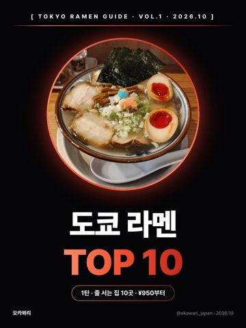
도쿄 라멘 TOP 10 · 1탄무료 PDF 받기 ↓
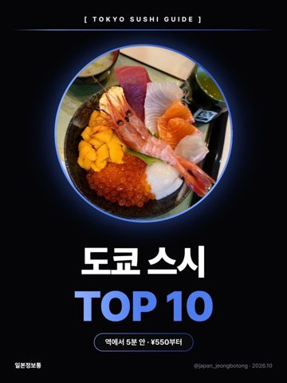
도쿄 스시 TOP 10 · 1탄무료 PDF 받기 ↓
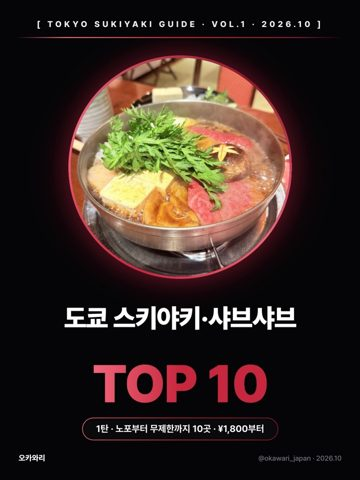
도쿄 스키야키·샤브샤브 TOP 10 · 1탄무료 PDF 받기 ↓
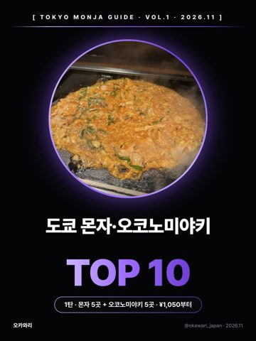
도쿄 몬자·오코노미야키 TOP 10 · 1탄무료 PDF 받기 ↓
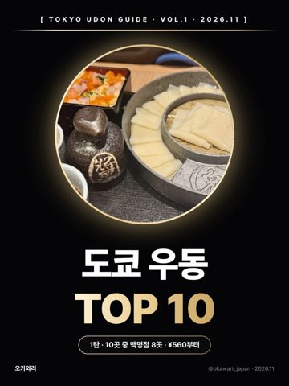
도쿄 우동 TOP 10 · 1탄무료 PDF 받기 ↓
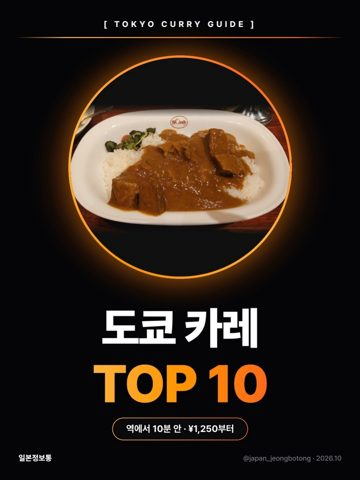
도쿄 카레 TOP 10 · 1탄무료 PDF 받기 ↓
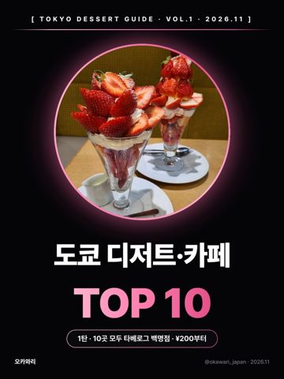
도쿄 디저트·카페 TOP 10 · 1탄무료 PDF 받기 ↓
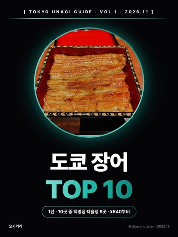
도쿄 장어 TOP 10 · 1탄무료 PDF 받기 ↓
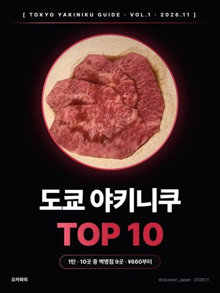
도쿄 야키니쿠 TOP 10 · 1탄무료 PDF 받기 ↓
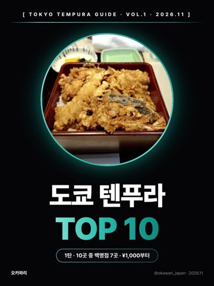
도쿄 텐푸라 TOP 10 · 1탄무료 PDF 받기 ↓
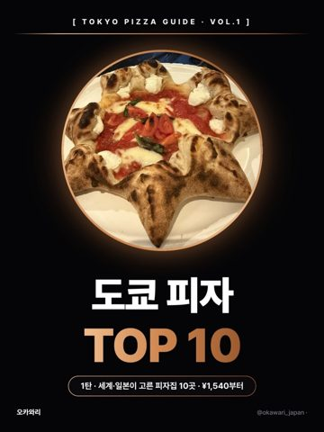
도쿄 피자 TOP 10 · 1탄무료 PDF 받기 ↓
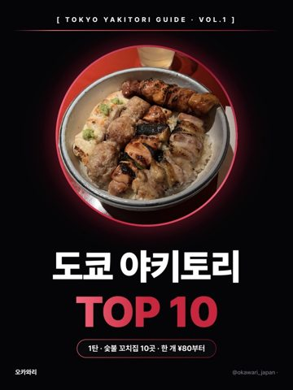
도쿄 야키토리 TOP 10 · 1탄무료 PDF 받기 ↓
오사카
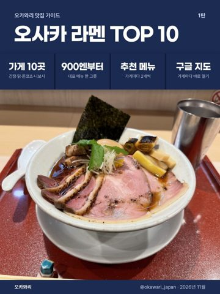
오사카 라멘 TOP 10 · 1탄무료 PDF 받기 ↓
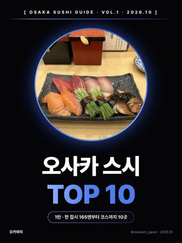
오사카 스시 TOP 10 · 1탄무료 PDF 받기 ↓
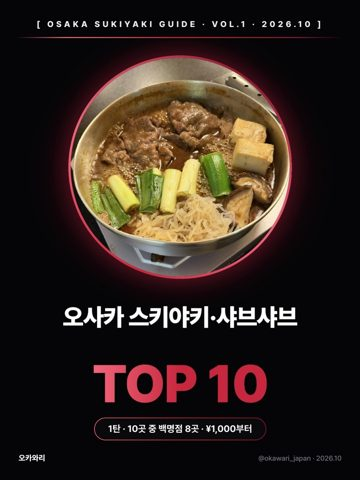
오사카 스키야키·샤브샤브 TOP 10 · 1탄무료 PDF 받기 ↓
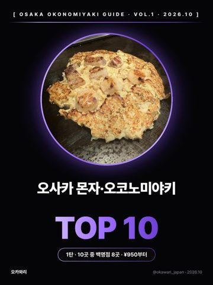
오사카 몬자·오코노미야키 TOP 10 · 1탄무료 PDF 받기 ↓
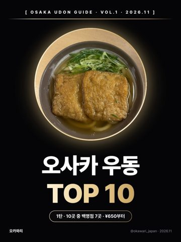
오사카 우동 TOP 10 · 1탄무료 PDF 받기 ↓
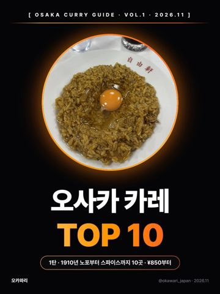
오사카 카레 TOP 10 · 1탄무료 PDF 받기 ↓
오사카 디저트·카페 TOP 10 · 1탄무료 PDF 받기 ↓
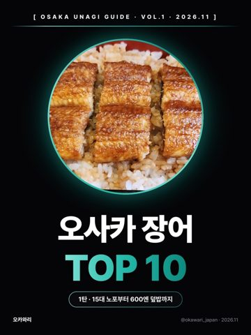
오사카 장어 TOP 10 · 1탄무료 PDF 받기 ↓
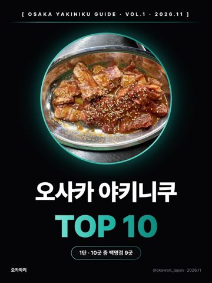
오사카 야키니쿠 TOP 10 · 1탄무료 PDF 받기 ↓
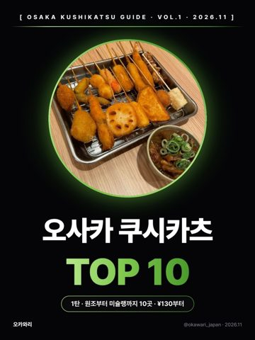
오사카 쿠시카츠 TOP 10 · 1탄무료 PDF 받기 ↓
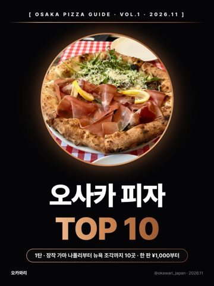
오사카 피자 TOP 10 · 1탄무료 PDF 받기 ↓
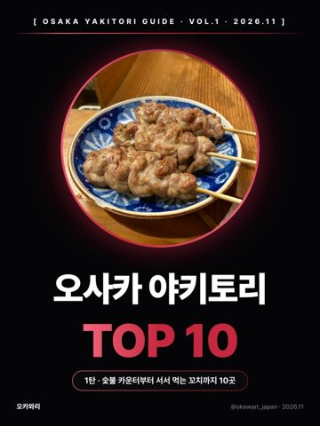
오사카 야키토리 TOP 10 · 1탄무료 PDF 받기 ↓
후쿠오카
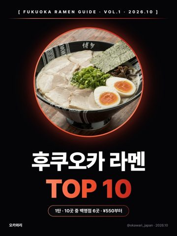
후쿠오카 라멘 TOP 10 · 1탄무료 PDF 받기 ↓
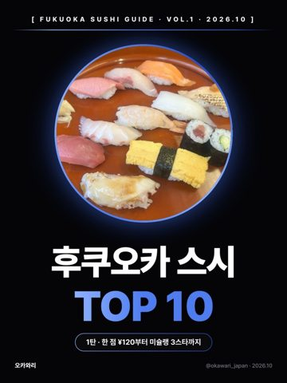
후쿠오카 스시 TOP 10 · 1탄무료 PDF 받기 ↓
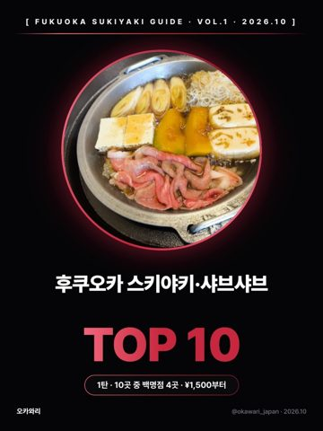
후쿠오카 스키야키·샤브샤브 TOP 10 · 1탄무료 PDF 받기 ↓
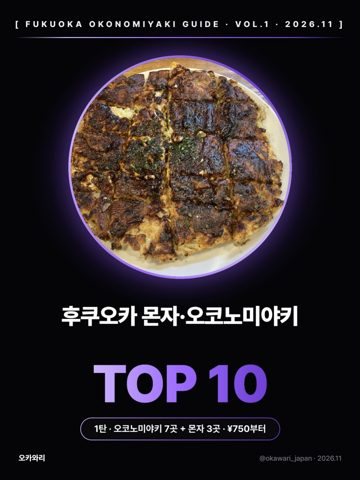
후쿠오카 몬자·오코노미야키 TOP 10 · 1탄무료 PDF 받기 ↓
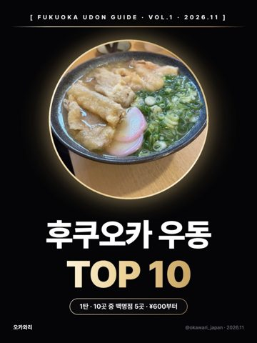
후쿠오카 우동 TOP 10 · 1탄무료 PDF 받기 ↓
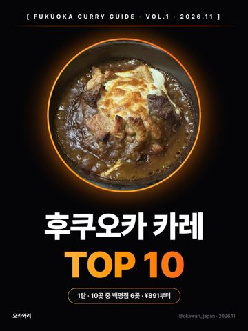
후쿠오카 카레 TOP 10 · 1탄무료 PDF 받기 ↓
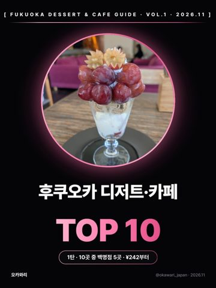
후쿠오카 디저트·카페 TOP 10 · 1탄무료 PDF 받기 ↓
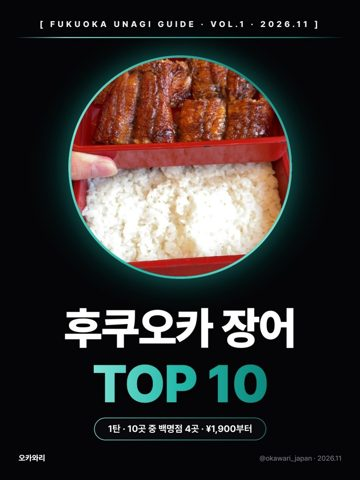
후쿠오카 장어 TOP 10 · 1탄무료 PDF 받기 ↓
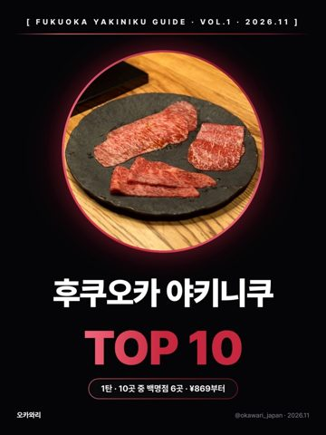
후쿠오카 야키니쿠 TOP 10 · 1탄무료 PDF 받기 ↓
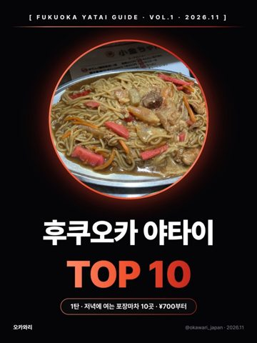
후쿠오카 야타이 TOP 10 · 1탄무료 PDF 받기 ↓
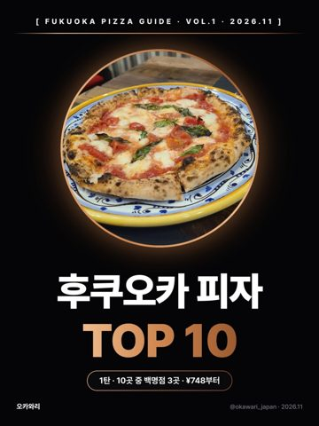
후쿠오카 피자 TOP 10 · 1탄무료 PDF 받기 ↓
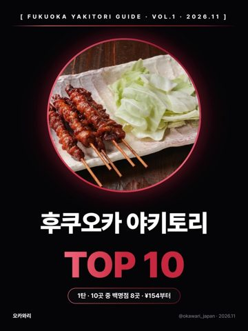
후쿠오카 야키토리 TOP 10 · 1탄무료 PDF 받기 ↓
🗺️ 준비 중 — 도시·음식별 맛집 지도
타베로그 백명점·미슐랭 빕구르망에 든 가게와 오카와리가 직접 고른 가게를 모아, 구글 지도에 저장해 두고 바로 길찾기 할 수 있는 맛집 목록을 준비하고 있어요. 소식은 인스타 @okawari_japan에서 먼저 알려 드릴게요.
타베로그 백명점·미슐랭 빕구르망에 든 가게와 오카와리가 직접 고른 가게를 모아, 구글 지도에 저장해 두고 바로 길찾기 할 수 있는 맛집 목록을 준비하고 있어요. 소식은 인스타 @okawari_japan에서 먼저 알려 드릴게요.